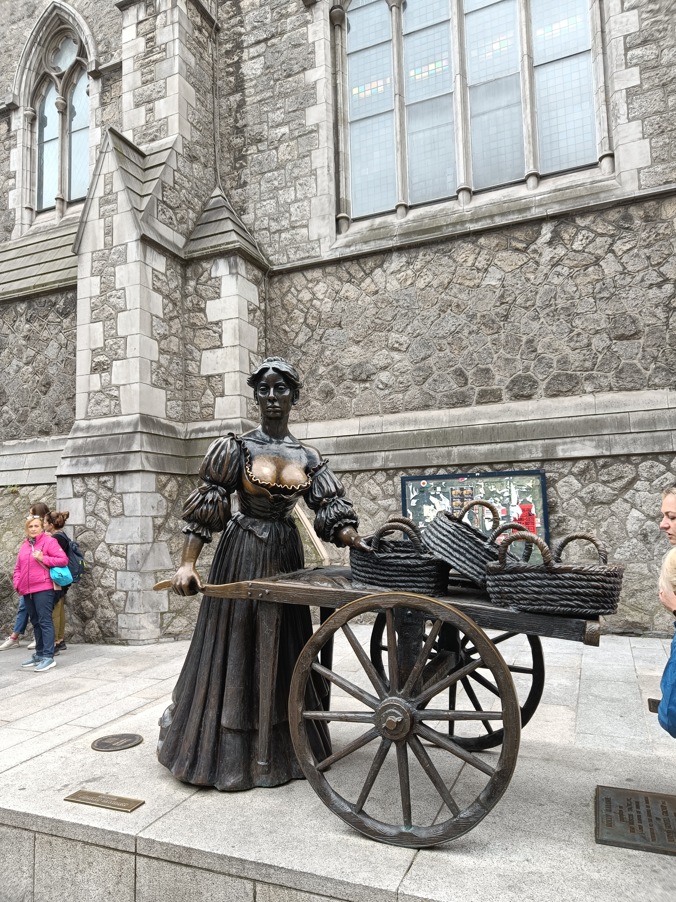

ireland, my first solo trip abroad
7–9 July 2025
on the morning of the 7th of july i woke up at an hour far to early to be catching a bus, 5am. my mission was for my first solo trip in a foreign country, and ireland just made sense, so off i was to dublin for 2 nights, as i slung on my backpack with nothing but sweets and a change of clothes i contemplated life itself. by the time i had gotten to the bus stop next to the royal highland showgrounds at ingliston it was 6 and i had to walk for about a mile to the airport itself. normally this wouldn't be an issue, it could even be enjoyable, looking off at the sunrise whilst walking towards the airport, getting up close to the tower and weird bus gate things, but no. the path was narrow when it was built, now made even moreso by the overgrown shrubbery the council seemingly doesn't want to trim slyly encouraging you to not do this and take the tram instead (£7.90 single) funnily enough the walking route is also not advertised anywhere, but anwyays this was also bad because i had just had surprise surgery and had to get an orchiopexy so i was wearing - what i can only describe as a thong, combined wirh with several stiches, some pain, and the path being narrow and shrubs wracking me in the face? maybe not quite as pleasant as i had envisaged it
i got to the airport at roughly half past 6, my first protocol as per usual was the toilet just up the first stairs prior to security, as per usual it was underwhelming and vaguely liminal. after i had used the toilet luckily security was a breeze, (though i did get a few looks asking how old i was). however, unluckily, later on in the same day i flew out, edinburgh airport lifted the liquid limits brought in after the post 9/11 panic which was nice and probably should've been done 10 years (or hours) earlier, it was still nice to know next time i go through i could bring a drink, and not resort to spending £5 at a whsmith for a sad sandwich and 500ml bottle of coke. my flight was leaving from one of the far out gates and whilst i understand edinburgh is a relatively small airport it felt like a long walk, possibly due to the aforementioned surgery. so there i was, limping around edinburgh airport at 7 now, waiting for my gate to come up on the board, until i remembered that you can just check your phone and the website shows your gate way before the screens do, something that always makes me feel smug doing - this time being no different.
there was a slight delay but that didn't concern me, and by the time priority boarding started i was clutching my ticket like a little kid, waiting for my turn to get on. when i did i was met with a mid 20s couple next to me who were really quite nice, although i felt bad for sitting next to them AND taking the window seat, but oh well the flight was short anyways (1 hour ish). flying over scotland was weird, i could recognise every little village and town as far out as coatbridge where i could see the rail lines running north, past that we made a turn towards ayrshire and i lost track, but it was fun for a second seeing livi and the centre from the sky. by the time the seatbelt light had came off there was about a 10 minute window before it came back down and we were descending again, on the way in i somehow recognised howth and realised dublin was quite a bit bigger than i pictured mentally. once in dublin airport thanks to the troubles i didn't have to through any security because of the common travel area, letting irish and british nationals travel between the two countries as though they were one, basically mini schengen held up by the good friday agreement and the UK government not wanting to set a precedent of giving devolved nations control of their own borders.
dublin airport easily dwarves edinburgh in size, and with more than double the flights anually (30m vs 15m) it's no surprise why. after navigating several hallways i struggle to find a weird car park cafe building, "wrights of howth" which was - oddly enough where you have to buy your "leap card", which is basically just oyster but irish, distinguishing dublin as just one of two european capitals without any contactless payments (the other being paris, oddly enough) after paying 2 euros for the card itself and 8 more to put 3 days travel on it (the only other option being a day or week) i was pleasantly surprised to learn that the conversion rate was favourable to pounds and it was only about £10. £10. for 3 days of public transport across all modes. in edinburgh a network dayticket only covering bus and tram is £12.50. god bless ireland. anyways after buying it i learned it doesn't cover the airport bus, leading to me slogging along on a local bus into the city centre because im cheap and there was already a massive crowd for the coaches taking you to the city centre. the bus was fine? it wasn't impressive but i mean it was a bus, what do you expect. one thing that did irk me is the bus had no screens, anywhere. not to mention no wifi, or announcements, and the seats? old row style ones. it was if i had stepped 15 years back, long ago enough to be annoying and not cute and retro.

once nearing the city centre i saw the spire and laughed a bit much out loud on a bus full of locals. for reference, the spire is a big metal tower 120m heigh, which is tall but not impressive on its own right, however, it is by far the tallest thing in dublin. the tallest buildings otherwise cap out at about 3-4 stories (12 ish metres) so imagine, in the city centre, where there is nothing but small buildings, and then a massive tower 10x taller than even the next highest structures. it looks ridiculous and i love it. after wandering about for a while i saw the ill fated "portal" a direct 24/7 video link between dublin and new york, which unsurprisingly didn't go to well, and is now to the much tamer city of lublin in poland, and I can only imagine it was chosen because someone mispelled dublin when discussing new portal locations - nothing against lublin, but of all places?

next on the itinerary was pheonix park, one of europes largest enclosed nature parks, and yeah, it was big! though it was kind of weird feeling as cars could drive through it, leading to it feeling more like undeveloped land than a nature reserve. on my walk out of the park i saw the presidents house, which looked predictably colonial. regardless it houses possibly my favourite irishman, michael d. higgins. michael is 5'3 and 84 years old, and has been the president for 14 years, i love him. my favourite (ish) part of this day was the train in, which I don't think I actually should've been on but in fairness it wasn't very clear. continuing the trend of irish transport being functional but not fancy, the train also didn't have wifi/usb/particularly nice seats, which sure, on a bus whatever, but a train? culture shock or what.

by this point I realised getting up at 5 and then walking 9 miles whilst in surgery recovery probably wasn't my smartest idea so i head to the hotel - by walking. the hotel was really quite nice, though I think it was more intended for long term stays as it was basically an apartment and the building had a gym inside aswell, though my options were limited because finding accommodation at 16 is like a needle in a haystack, so I didn't mind. checking in felt weird and i got the suspicion that if i had shaved at any point since I was in hospital it wouldn't have been as straightforward. the room was pretty nice but I was tired so I just went out, bought noodles, and then ate them whilst watching the chase on irish tv until it was late enough for me to fall asleep, day 2 awaiting.

day 2. first on the agenda was taking the luas, irelands only modern tram system, it was pretty good - and guess what, had free wifi. still no usb or good seats but definitely a step up from the prior rectangles with folding chairs I'd been on. my first stop was south of the river, the molly malone statue and the waterfront (and the bus station because I needed to pee), unlike most cities, I got the idea that the southside was the posh part of dublin, which kind of upset me but worse things have happened, also saw dublin castle, which was honestly pretty underwhelming, it was just a bunch of paintings, so I decided to go further out, to howth, howth is to dublin what portobello is to edinburgh, the closest beach. it was pretty nice and taking the dart (dublin area rapid transit), dublins overground suburban rail network to it felt like a step up of quality of buses at least. the area had that kind of "wacky" (gentrified) feel to it where every shop was either a fish and chips or a bottom of the barrel basic pub, which honestly if you're being pessimistic is half of dublin anwyays. the view from the beach was nice and i sat on a pier and ate my lunch, before promptly leaving, or atleast attempting to. I missed the train by literally a few seconds, so I was left to taking a bus like a loser. though after looking at my phone I learned the bus was actually the same speed if not faster, than the dart, "dublin area rapid transit". "rapid". bur sure, a bus beats it, funnily enough I saw my train a few times (it must've been delayed) and we actually passed rhe station as it was pulling into it.

after being refreshed by the smell of fish markets and the questionable smell of the bus i headed off to the national history museum of ireland. this one was actually really great and I only actually had time for one section of it, being the irish military section. I know it's ireland and I get it to an extent but there definitely did seem to be a bias when it came to the troubles/independence, stuff like the provisional ira being called "republicans" and the uvf "militias" made clear the stance of the irish towards unionists. the museum did feel a bit propaganda-y at times, never talking about the bad parts of war and glossing over republican groups in the troubles, but it was also really interesting seeing firsthand accounts of all of the islands history, aswell as the near mythical status the "big fella" had, michael collins, one of the founding fathers of the free state. it was interesting to me though as back home we would never talk about a politician - even a radically great one this way, there was statues of him everywhere, quotes on buildings, spraypainted phrases etc... it was actually really interesting but I suppose after 800 years of repression the people who stood up to change that can be seen as heroes.
after the war museum I took the tram back to my hotel and then got nandos, which was actually quite nice, though they did make me download a seperate app and transfer my account, and on top of that they had a seperate rewards system so my rewards weren't redeemable and I didn't get any from visiting, which was a bit annoying. the food was nandos (which had free wifi, btw), which is to say pretty good but never as good as you remember it and always more expensive than you remember it. i ended up spending £33 somehow, not sure how because euros are less than pounds and usually I'm somewhere in the ballpark of £15-17 but it was nice and I had budget left so why not treat myself to something exotic, like a chain restaurant. by the time I was on my fourth refill I thought it was probably reasonable to leave and return to my hotel, which fortunately was just round the corner. once in the hotel I quickly did my best to pack everything back up and prepare for the flight home.
the bus to the airport was like the rest of the one's I'd been on so far, underwhelming and took an hour to get to the airport, which is pitiful. I actually had managed to fall asleep on the bus and only woke up when it ground to a halt at terminal 1, doing it's best to avoid the other 5 buses at the stop, fortunately I was for terminal 2 so I was woken up just in time. by just in time I mean 2 hours early, but hey, better safe than sorry, especially when if I got stuck I'd be hard pressed finding somewhere that lets a 16 year old stay with no notice whatsoever. once I got through security I spent am embarrassingly long amount of time in duty free tourist shops, something I usually avoid. I ended up getting an irish flag, top, and a present for my girlfriend. romantic, I know. by the time I remembered my trick with the airport websites my gate was already up, and unfortunately the gate next to mine was for stansted, meaning I somehow managed to hear more posh english accents in dublin airport than edinburgh, which is genuinely impressive. there was two ladies I overheard talking about how they "simply must return one day" and how they might need to change their swiss skiing trip for another dublin one, and I mean sure? dublin was nice but? skiing in the swiss alps or a stereotypical european capital? I could only assume it was a "common people" situation. by the time I was getting bored of eavesdropping my flight was about ready to board, until it got delayed, then again, then again. all of a sudden I went from getting back at 9pm to 11pm, which wasn't great as the last bus home is well before then and it meant I'd need to pester my dad for a lift home, which fortunately he was awake anyways and I just had to walk to ingliston park and ride to get him, once we finally got on the flight, they were obviously trying to make up on time, and they did! the flight only ended up being about 45 minutes which is really quite impressive considering it's just over 200 miles, but it would've been nicer to be home earlier, you take what you get though. this time next to me was an older woman who I spoke to pretty much the full time, she was from glasgow and was visiting family and was one of those glasweigans who just blether on, but not in a bad way, anywyas by the time the flight landed I knew more about this woman than her kids probably did.
one last positive surprise was the common travel agreement which I had forgotten about, meaning I was in domestic arrivals in edinburgh, meaning no more security and being right at the door to leave the airport, which was great, I peed one last time at the pre security airport toilet before trying to find wherever my dad was to pick me up. after waddling down the same slim paths I had 2 days ago I managed to find him and get in the car. Overall? travelling solo was really enjoyable and it was very freeing knowing you answer to no one but yourself, however it's also a bit stressful, as say my dad was asleep, what would I have done then? or I missed the flight? obviously everything was okay but it easily could've went south quick. overall? 8/10 dublin was pretty cool, it was a weird mix of british and continental influence which made it quite unique buildings wise, but yeah, that's all, would reccomend.